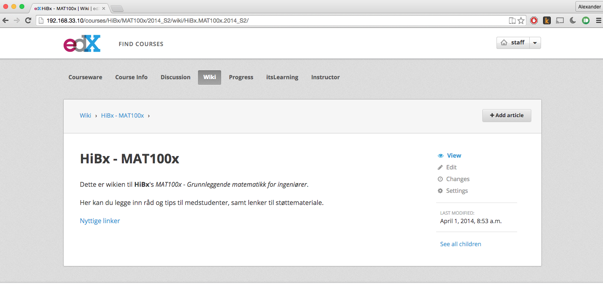

eLæring i MAT100 (og Matte 2)
- WeBWorK
- KursX.no
- Matteekspressen
webwork
Elektronisk øvingssystem. Benyttes i MAT100 for elektroklassene.
DEMO
KursX.no
Online støttekurs til MAT10x med videoer (ekstraforklaringer til pensum, løsningsforslag) og quiz-spørsmål.
Bruker softwaren som ligger bak edX.org. (OpenEdX)

Wiki, forum, etc
Matteekspressen
Et "ticket support"-system studentene kan bruke for å tilkalle hjelp. Spesielt i eksamensperioden.
Ideen basert på Kristines matteekspress (via SMS).
Studentene registrerer spørsmål ved å velge tema/kurs og skrive inn hvor de sitter.
Tilgjengelig faglærer rykker ut